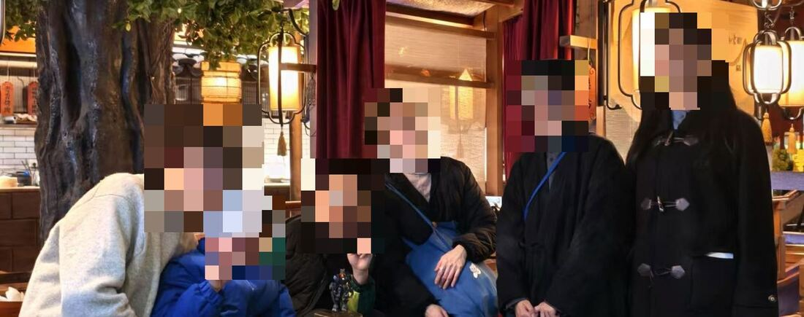
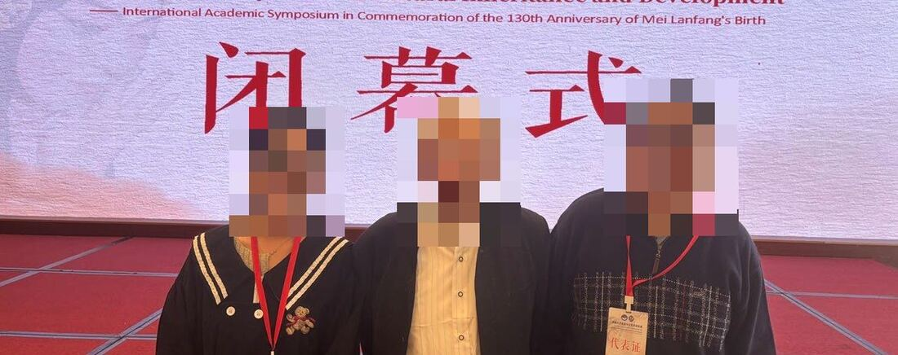
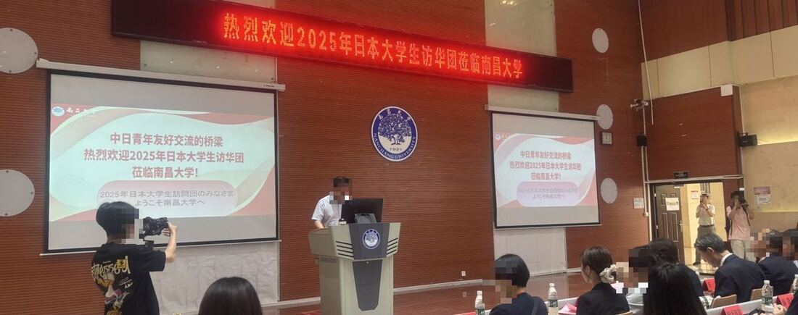
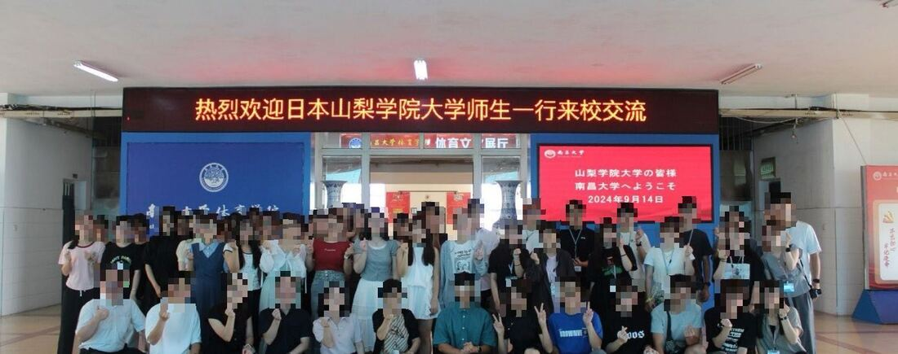
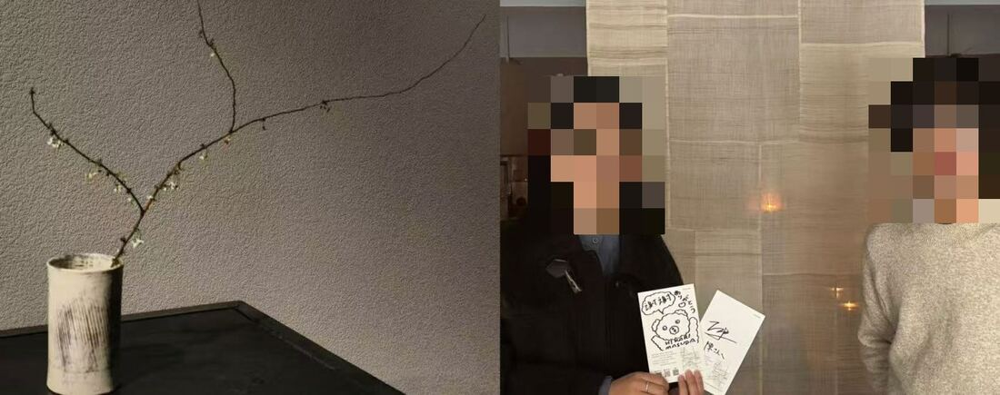
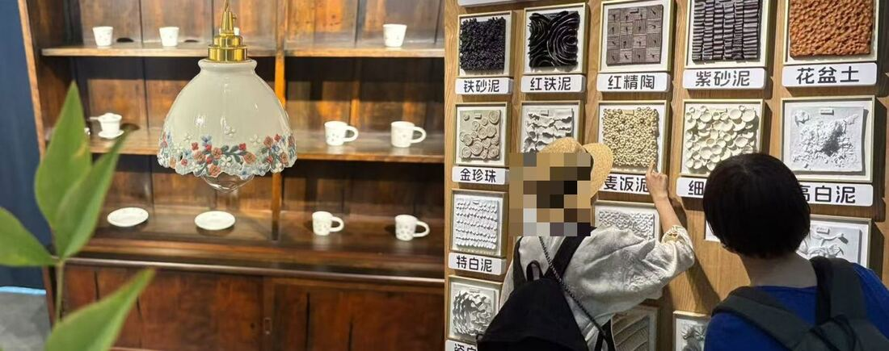

旅旅游陪同観光アテンドTravel
景德镇两次陪同（8 天、7 天），婺源日本团队（4 天），南昌 30 人研学旅行（7 天）。
景徳鎮アテンド2回（8日間・7日間）、婺源での日本人団体（4日間）、南昌での30名スタディツアー（7日間）。
Two Jingdezhen tours (8 and 7 days), a Japanese group in Wuyuan (4 days), a 30-person study tour in Nanchang (7 days).
上外日语硕士
中日跨文化运营 · 50+ 场口译实战
上海外国語大学 日本語修士
日中をつなぐ運営・通訳実績50件以上
MA in Japanese, SISU.
Cross-cultural operations between China and Japan, with 50+ interpreting jobs.
可尽快到岗 · 全勤实习 6 个月即日勤務可・フルタイムで6か月のインターンが可能Available now for a 6-month full-time internship
自己紹介
我是陈梦玲，上海外国语大学日语语言文学专业硕士在读（28 届）。本科毕业于南昌大学日语专业，专业排名 1/25。
本科期间我代表南昌大学和江西省参加翻译、口译、演讲等日语竞赛，获省级以上奖项 20 余项；连续三年获国家励志奖学金，并获江铜奖学金（全校最高额度 2 万元）。毕业时获评优秀毕业生，毕业论文获评优秀毕业论文。
最近一段经历是在网易有道做海外 KOL 营销，负责日本市场的创作者运营。我喜欢和人打交道，也习惯用数据和流程把事情理清楚、往前推。接下来想把日语和跨文化经验用在日本市场的运营工作里。
上海外国語大学大学院 日本語言語文学専攻に在籍しています（2028年修了予定）。南昌大学日本語学科を学科1位（1/25）で卒業しました。
学部時代は南昌大学・江西省の代表として翻訳、通訳、スピーチなどのコンテストに出場し、省級以上の賞を20件以上受賞しました。国家励志奨学金を3年連続で受給し、江銅奨学金（学内最高額2万元）にも選ばれました。卒業時には優秀卒業生・優秀卒業論文に選出されています。
直近では網易有道（NetEase Youdao）で海外KOLマーケティングを担当し、日本市場のクリエイター運営に携わりました。人と関わることが好きで、データと業務フローを整理して物事を前に進めるのが得意です。日本語と異文化理解を、日本市場の運営の仕事に生かしたいと考えています。
I'm an MA student in Japanese Language and Literature at Shanghai International Studies University (class of 2028). I graduated first in my cohort (1/25) in Japanese at Nanchang University.
As an undergraduate I represented my university and Jiangxi Province in translation, interpreting and speech contests and won more than 20 provincial and national awards. I received the National Encouragement Scholarship three years running and the Jiangxi Copper Scholarship, the university's largest award (¥20,000), and graduated with Outstanding Graduate and Outstanding Thesis honors.
Most recently I worked in overseas KOL marketing at NetEase Youdao, running creator relations for the Japanese market. I like working with people, and I'm good at making data and workflows clear enough to move a project forward. Next, I want to put my Japanese and cross-cultural experience to work in market operations for Japan.
職歴
参与德民欣公司日区商品直播带货，单场最高销售额 287 美元，积累了日本市场商品推广、内容转化和用户反馈观察的经验。把相关日语内容同步到自媒体账号，累计 2 万浏览、千余点赞收藏。
徳民欣社の日本向けライブコマースに参加し、1回の配信で最高 287ドル を販売。日本市場での商品プロモーション、コンテンツからの購買転換、ユーザー反応の観察を経験しました。関連する日本語コンテンツを自身のSNSでも発信し、累計 2万回 閲覧、1,000件以上のいいね・保存を獲得。
Hosted live-commerce streams for a seller's Japanese store; the best single stream reached US$287 in sales. Learned product promotion, content-to-sales conversion and reading user feedback in Japan. Repurposed the Japanese content on my own social accounts for 20k views and 1,000+ likes and saves.
连续三年独立承接 50+ 场中日陪同口译，覆盖游戏、艺术、制造业、医美、法律、产品出海等领域。详见下方口译经历。
3年連続でフリーランスとして 50件以上 の日中アテンド通訳を担当。ゲーム、アート、製造業、美容医療、法務、製品の海外展開など幅広い分野に対応。詳細は通訳実績へ。
Three years of independent work on 50+ liaison interpreting jobs across gaming, art, manufacturing, aesthetic medicine, law and overseas product launches. See Interpreting below.
辅导学员 300+ 人，包括中小学生、日企员工和留学准备生，课程涵盖 JLPT 考级、商务日语、口语会话和日语高考。
小中高生、日系企業の社員、留学予定者など 300名以上 を指導。JLPT対策、ビジネス日本語、会話、中国の大学入試（日本語科目）対策を担当。
Taught 300+ learners, from school students to employees of Japanese companies and students preparing to study abroad. Courses covered JLPT prep, business Japanese, conversation and Japanese for the gaokao.
作为中日项目的沟通桥梁，参与 100+ 场线上交流会，协调研发、测试、生产等部门同步信息，推动项目节点按时交付；独立撰写 300+ 份日文会议报告，用 Excel 归类追踪，提炼项目进展与风险点。
日中プロジェクトの橋渡し役として 100回以上 のオンライン会議に参加し、開発・テスト・生産部門間の情報共有を調整してマイルストーンの納期を守りました。日本語の会議報告書を 300件以上 作成し、Excelで分類・追跡して進捗とリスクを整理。
Bridged communication on Japanese client projects: joined 100+ online meetings and kept R&D, testing and production in sync to hit milestones. Wrote 300+ meeting reports in Japanese and tracked them in Excel to surface progress and risks.
从 0 到 1 策划统筹「日语风采大赛」等校级活动，覆盖 1000+ 人次，带 50 人团队完成 12+ 个大型节目；通过供应商谈判把采购成本降低 52%，并建立复盘与 SOP 文档。
学内イベント「日本語風采大会」などをゼロから企画・統括し、延べ 1,000人以上 が参加。50名のチームで大型演目12本以上を実施。仕入先との交渉で調達コストを 52% 削減し、振り返りとSOPを文書化しました。
Built campus-wide events such as the Japanese Showcase from scratch, reaching 1,000+ attendees, and led a 50-person team through 12+ major stage productions. Cut procurement costs by 52% through supplier negotiation and documented reviews and SOPs.
通訳実績
景德镇两次陪同（8 天、7 天），婺源日本团队（4 天），南昌 30 人研学旅行（7 天）。
景徳鎮アテンド2回（8日間・7日間）、婺源での日本人団体（4日間）、南昌での30名スタディツアー（7日間）。
Two Jingdezhen tours (8 and 7 days), a Japanese group in Wuyuan (4 days), a 30-person study tour in Nanchang (7 days).
华勤科技工厂陪同与商务洽谈（智能电子产品）；上海大隈机械日企团建的主持与即兴祝酒词；陶艺家十人商务宴会。
華勤科技での工場アテンドと商談（スマート電子機器）、上海大隈機械のチームビルディングでの司会・乾杯の挨拶、陶芸家10名の会食。
Factory visits and negotiations at Huaqin (smart devices); MC and impromptu toasts at Okuma Shanghai's team event; a ten-person business dinner for ceramic artists.
中方智能家电品牌赴日洽谈：产品介绍、合作模式、分红比例和本地化方案。
中国のスマート家電ブランドと日本側の商談。製品紹介、提携モデル、利益配分、ローカライズ方針。
A Chinese smart-appliance brand negotiating with Japanese partners: product pitch, partnership model, revenue split and localization.
为期 2 个月：术前面诊、术中口译、术后陪同和后续合作洽谈，协助促成 300 万日元的后续成交。
2か月間。術前カウンセリング、術中通訳、術後のアテンド、その後の提携交渉まで担当し、300万円の追加成約に貢献。
Two months covering consultations, in-procedure interpreting, aftercare and follow-up deals, helping close ¥3 million in further business.
两起民事纠纷全案跟进口译，从律师咨询到争议解决全程参与。
民事紛争2件の通訳を、弁護士相談から紛争解決まで一貫して担当。
Interpreted two civil disputes end to end, from lawyer consultations to resolution.
戏剧主题国际学术会议陪同并协助 CCTV 采访口译（4 天）；日本山梨学院大学研学陪同（10 天）；东京大学等东日本百人访华团跟车翻译。
演劇がテーマの国際学術会議でのアテンドとCCTV取材の通訳補助（4日間）、山梨学院大学の研修アテンド（10日間）、東京大学など東日本の大学による100名訪中団のバス通訳。
An international theatre symposium plus CCTV interview support (4 days); a Yamanashi Gakuin University study visit (10 days); on-bus interpreting for a 100-person delegation from the University of Tokyo and others.
两场日本陶艺家展会（3 天、5 天）：作家风格、创作理念、制作工艺和购买规则。
日本の陶芸家による展示会2回（3日間・5日間）。作風、制作理念、技法、購入ルールを通訳。
Two exhibitions by Japanese ceramic artists (3 and 5 days): style, ideas behind the work, technique and purchase terms.






← 左右滑动查看 · 照片中的人物均已打码← 横にスクロール・写真の人物はモザイク処理済み← Scroll sideways · faces are pixelated for privacy
一週間本当にありがとう！陳さんのおかげで、とても良いコミュニケーションをとることができました。景徳鎮の文化や歴史も学べて本当によかったです。
这一周真的谢谢你！多亏了陈小姐，我们沟通得非常顺利，还学到了景德镇的文化和历史。
Thank you so much for the week! Thanks to you we communicated really well, and we learned so much about Jingdezhen's culture and history.
今回は本当に本当に大変お世話になりました。とても頼りになりました。
这次真的真的非常感谢你的照顾，你非常可靠。
Thank you, truly, for everything this time. You were someone we could really rely on.
陳さんのおかげで、とても楽しく充実した検討会になりました。ありがとうございます。
多亏了陈小姐，这次研讨会开得非常愉快、非常充实。谢谢！
Thanks to you, the review meeting was enjoyable and productive. Thank you.
実は陳ちゃんは私より日本語ができる。私の知らない単語もよく知っている。
其实小陈的日语比我还好，连我不知道的词她都知道。
Honestly, her Japanese is better than mine. She knows words I don't.
学歴・資格
受賞歴
省级以上奖项 20+省級以上の受賞 20件以上20+ provincial and national awards
個人プロジェクト
从五十音到 N1，免费学日语。我自己从 0 搭建并运营的日语学习网站，同时承接日语教学和口译委托。
五十音からN1まで、無料で学べる日本語学習サイト。企画から運営まで一人で手がけ、日本語レッスンと通訳の依頼も受け付けます。
A free Japanese-learning site, from kana to JLPT N1, that I'm building and running myself. It also takes bookings for lessons and interpreting.
連絡先
2470402347@qq.com